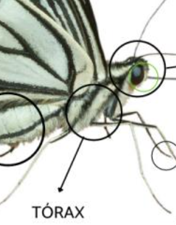

El tórax de una mariposa es la región media del cuerpo, ubicada entre la cabeza y el abdomen. Su función principal es la locomoción, ya que contiene los músculos que impulsan las patas y las alas, permitiendo que la mariposa camine y vuele.
- Locomoción: Alberga los músculos que mueven las patas y alas. Las mariposas tienen tres pares de patas y dos pares de alas, todos unidos al tórax.
- Soporte: Proporciona estructura y soporte para que patas y alas funcionen correctamente.
- Estructura: Está dividido en tres segmentos: protórax, mesotórax y metatórax. Cada uno tiene un par de patas; los dos últimos, un par de alas cada uno.
- Músculos: Contiene músculos especializados y fuertes para el vuelo y el movimiento terrestre.
- Regulación de aire: Participa en el control del flujo de aire al sistema respiratorio, especialmente durante el vuelo.
En resumen, el tórax es esencial para la movilidad de la mariposa, tanto en tierra como en el aire, y está adaptado para realizar estas funciones de manera eficiente.